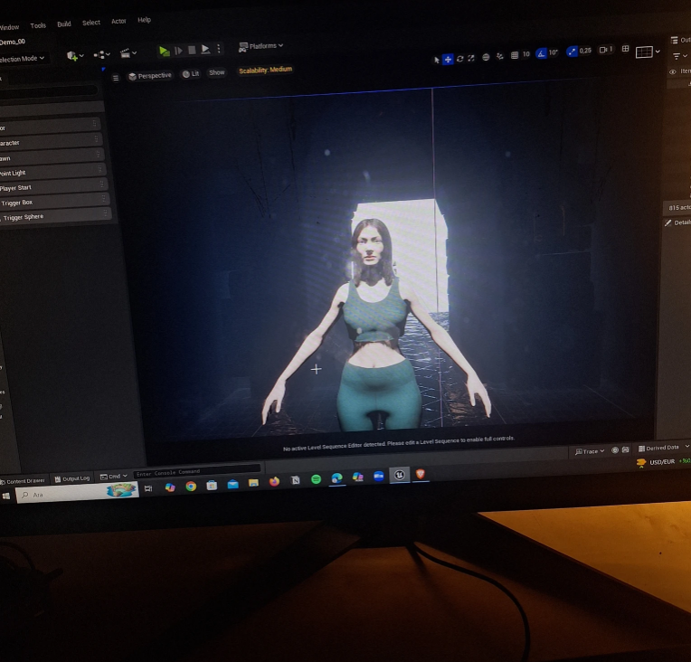
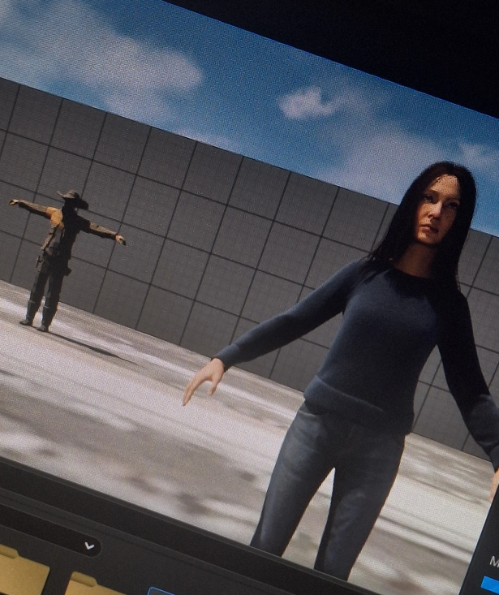

When I got the assignment to create a cinematic cutscene in Unreal Engine, I had zero real experience with it. I wasn't a 3D animator, or experienced in Unreal. YET.
When I got the assignment to create a cinematic cutscene in Unreal Engine, I had no real experience with it. I wasn't a 3D animator, or experienced in Unreal. YET. I was someone who cared about story, atmosphere, and cinematic impact. But I knew I had to figure it out on my own. What followed was two weeks of doing things the hard way, breaking everything multiple times, and somehow, finishing a cutscene I'm genuinely proud of.
The cutscene is from my fictional game The Hatman, a psychological horror where the main character, Maria, a woman trapped in a decaying subconscious world, collecting fragments of a broken mirror she believes will set her free. But what she finally reassembles the mirror, the truth is far worse: the gate she opens doesn't lead out, deeper in. She comes face to face with Hatman, the shadow entity born from her own denial. This scene marks the turning point in the story. Maria stops running. And starts staring.

I built the entire scene in Unreal Engine 5 using Sequencer on a MetaHuman character, a Megascans environment, Mixamo for body animation, and Bone Blender to fix a rigging issue I didn't see coming. I struggled with animation imports, lighting issues, memory crashes — and animating facial expressions without an iPhone (yes, really).
One of the biggest challenges was attaching clothing to my MetaHuman character, since the outfit used didn't come rigged. I had to go into Blender, convert it to a skeletal mesh, and then use Unreal's "Set Master Pose Component" in Blueprint to sync everything. That moment when it finally worked? Genius.
Then came Sequencer. That's where everything came together: camera movement, animation timing, lighting, even dialogue. I approached the scene like a director, choosing focal lengths to show power shifts, tilts, rack to emphasize emotion, and include slow-to-track for drama, born and bred in discussion. I followed the 8 Cs of Cinematography: camera angles, composition, cutting, close-ups, and continuity. The more I focused on visual storytelling and mood, the more the scene started to take shape.

Of course, it wasn't all smooth. Unreal Engine crashed a lot. Sometimes it forgot memory overloads that made rendering impossible. Sometime facial animations would randomly break just because I rotated the character too much. There were moments where I genuinely wanted to give up, especially when the lighting wouldn't render properly, or the texture busted on something else collapsed five minutes before deadline. But each issue taught me something. I learned to manage video memory by disabling asset streams, lowering assets the numbers, and reassigning content, minimal but intentional. I also learned that rendering in short clips instead of all at once saved my project more than once.After exporting all the shots, I took the sequences into Premiere Pro. There, I added background ambiance, synced up AI-generated voice acting, and added subtle reverb to the hatman's lines. I balanced the audio, added cinematic fades, and cleaned up the pacing. It wasn't just stitching — it was the emotions forced to that pulled it all together.
This outcome may not be a masterpiece, but it's personal. It taught me more than any tutorial could, because I had to figure it out while building something I believed in. It made me think like a director, not just a psychology student taking an elective course from the game department. And more than anything, it reminded me that even with limited tools and knowledge, I can still tell a story that hits somewhere deep.
If you're curious how it turned out, you can watch the full cutscene here: The Hatman — cinematic cutscene (YouTube)
Thanks for reading. If you're someone who's just starting and feels overwhelmed: just start. Focus on one shot. One emotion. One scene. That's how this all came to life.
Don't forget to subscribe to my YouTube channel and hit the notification bell so you're always updated on new animations and creative projects.
P.S. If you like my work and want to see more content, support me on my Ko-fi page!